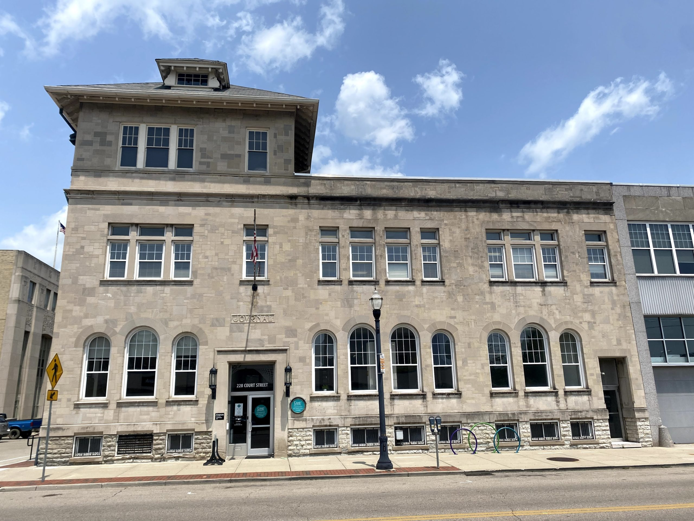

Job History
Pies & Pints
Prep and Dishwasher
-
Prepares pizza toppings, sauce, and dough for the day.
-
Maintains a clean kitchen, properly washes and sorts soiled dishes.
Atlas Advisors
Receptionist/Data Entry Clerk
-
Welcomed visitors and kept a detailed and accurate record of logbooks.
-
Inputted data from scanned documents in Adobe Acrobat into a digital database named SPEDELite.
Lane Tech Center

Public Services Associate
- Assisted or instructed patrons in locating and using a broad spectrum of information resources and
services.
- Assisted with planning programs, outreach activities, exhibits, displays and tours.